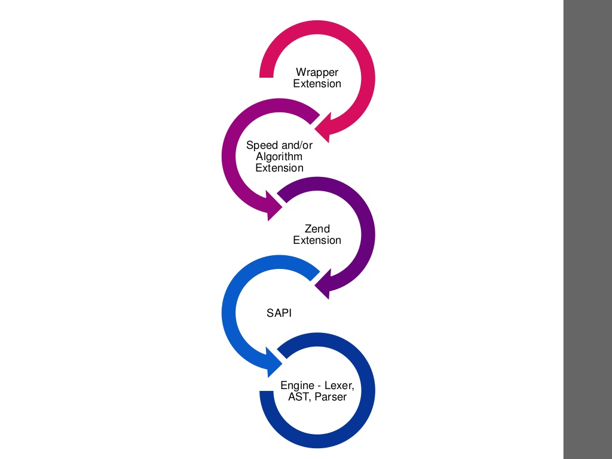
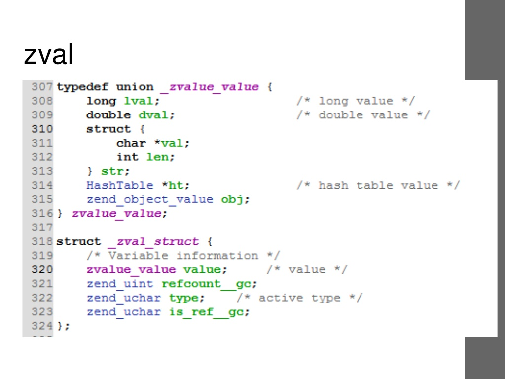
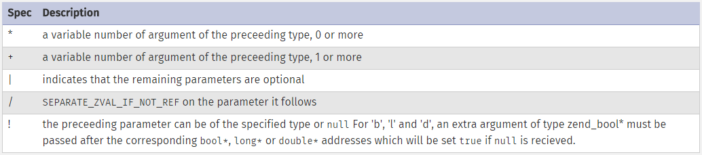

Reasons why one should write PHP extensions
- To port a library to PHP world
- To make an algorithm more efficient
- To extend the PHP language
- To be a better PHP programmer
- To protect the code
Exposing C libraries in PHP
- Mimicking the C API
- Creating a new one
glutInit($argc, $argv);
glutInitDisplayMode(GLUT_SINGLE|GLUT_RGB);
glutInitWindowPosition(0, 0);
glutInitWindowSize(800, 600);
glutCreateWindow('Simple model');
glutDisplayFunc($displayCallback);
glutReshapeFunc($reshapeCallback);
glutMainLoop();
$ch = curl_init("www.example.com/curl.php?option=test");
curl_setopt($ch, CURLOPT_HEADER, 0);
curl_setopt($ch, CURLOPT_POST, 1);
curl_setopt($ch, CURLOPT_RETURNTRANSFER, 1);
$output = curl_exec($ch);
curl_close($ch);
$request = new http\Client\Request("GET",
"http://localhost",
["User-Agent"=>"My Client/0.1"]
);
$request->setOptions(["timeout"=>1]);
$client = new http\Client;
$client->enqueue($request)->send();
// pop the last retrieved response
$response = $client->getResponse();
printf("%s returned '%s' (%d)\n",
$response->getTransferInfo("effective_url"),
$response->getInfo(),
$response->getResponseCode()
);
Extensions
- Standard
- Database ...
- PECL
PHP in pieces
- ZEND Engine: parsing, memory, ...
- PHP core: communication, SAPI
Extension lifecycle
SAPI
- MINIT
--- RINIT
----- ZE parses (tokens, opcodes)
--- RSHUTDOWN
- MSHUTDOWN
Global variables
TSRM
Memory allocation
- Persistent
- Non-persistent
How to become a PHP core developer

C programming language
- PHP syntax is similar to C
- Tons of documentation available
Environment requirements
- C compiler
- PHP source code
- PHP dependencies
Unix Build systems
- autoconf
- .
- automake
- .
- libtool
- .
PHPize command
phpize
./configure
make
make test
sudo make install
Common practices
- Keep multiple PHP versions in different directories
- Valgrind
- Coding standards: http://lxr.php.net/xref/PHP_5_6/CODING_STANDARDS
Debugging
- Configure with --enable-debug
- Run with a debugger (gdb, lldb)
Multithreading
- Configure with --enable-maintainer-zts
Hello world in PHP
function hello_world() {
return 'Hello World';
}
config.m4
PHP_ARG_ENABLE(hello, whether to enable Hello
World support,
[ --enable-hello Enable Hello World support])
if test "$PHP_HELLO" = "yes"; then
AC_DEFINE(HAVE_HELLO, 1, [Whether you have Hello World])
PHP_NEW_EXTENSION(hello, hello.c, $ext_shared)
fi
php_hello.h
#ifndef PHP_HELLO_H
#define PHP_HELLO_H 1
#define PHP_HELLO_WORLD_VERSION "1.0"
#define PHP_HELLO_WORLD_EXTNAME "hello"
PHP_FUNCTION(hello_world);
extern zend_module_entry hello_module_entry;
#define phpext_hello_ptr &hello_module_entry
#endif
php_hello.c
#ifdef HAVE_CONFIG_H
#include "config.h"
#endif
#include "php.h"
#include "php_hello.h"
static function_entry hello_functions[] = {
PHP_FE(hello_world, NULL)
{NULL, NULL, NULL}
};
zend_module_entry hello_module_entry = {
#if ZEND_MODULE_API_NO >= 20010901
STANDARD_MODULE_HEADER,
#endif
PHP_HELLO_WORLD_EXTNAME,
hello_functions,
NULL,
NULL,
NULL,
NULL,
NULL,
#if ZEND_MODULE_API_NO >= 20010901
PHP_HELLO_WORLD_VERSION,
#endif
STANDARD_MODULE_PROPERTIES
};
#ifdef COMPILE_DL_HELLO
ZEND_GET_MODULE(hello)
#endif
PHP_FUNCTION(hello_world)
{
RETURN_STRING("Hello World", 1);
}
Another version
PHP_FUNCTION(hello_world)
{
char *str;
str = estrdup("Hello World");
RETURN_STRING(str, 0);
}
Building the extension
$ phpize
$ ./configure --enable-hello
$ make
Virtual machines
Rasmus
vagrant up
vagrant ssh
newphp 56 debug zts
ZVAL

typedef struct _zval_struct {
zvalue_value value;
zend_uint refcount__gc;
zend_uchar type;
zend_uchar is_ref__gc;
} zval;
typedef union _zvalue_value {
long lval;
double dval;
struct {
char *val;
int len;
} str;
HashTable *ht;
zend_object_value obj;
} zvalue_value;
Functions
- Define your C function
- Create a PHP function
1. Include it in your extension
2. Expose how it uses arguments
- Parse parameters
- Execute C function
- Return data to PHP land
Function args: Type specifiers

Function args: "Advanced" type specifiers

Running tests against your extension
- http://qa.php.net/write-test.php
- http://qa.php.net/phpt_details.php
Verify extension is enabled
php -d extension=foobar.so -m
Document and publish
http://doc.php.net/phd.php
https://edit.php.net/
http://svn.php.net/viewvc/phpdoc/en/trunk/reference/
How to become a contributor
- Email pecl-dev@lists.php.net
- Who you are
- What you wrote
- Why do you think it should be part of PECL
References
http://php.net/manual/en/internals2.php
http://www.phpinternalsbook.com/
/